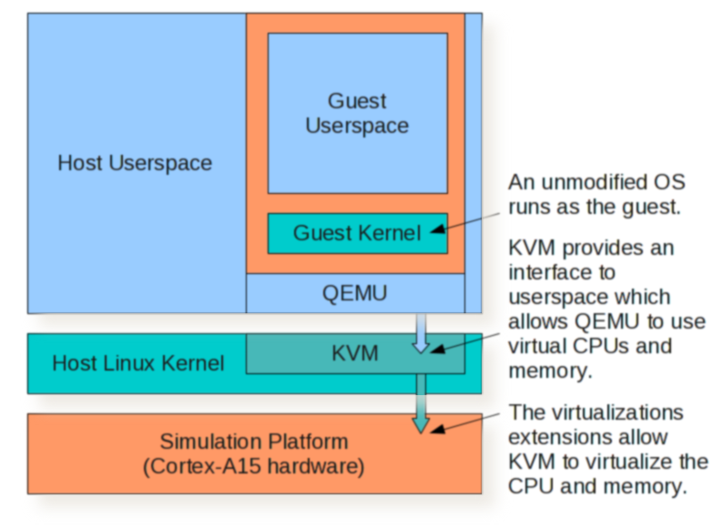
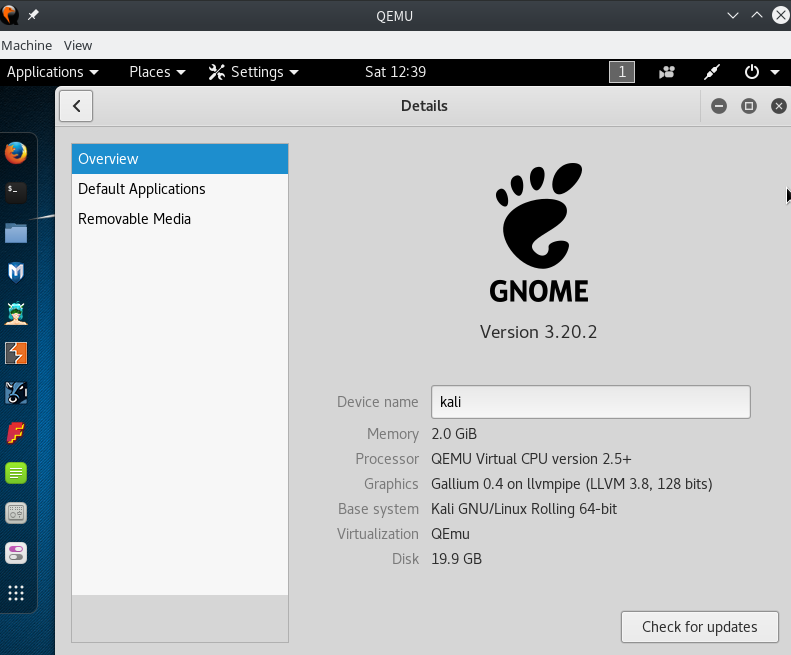
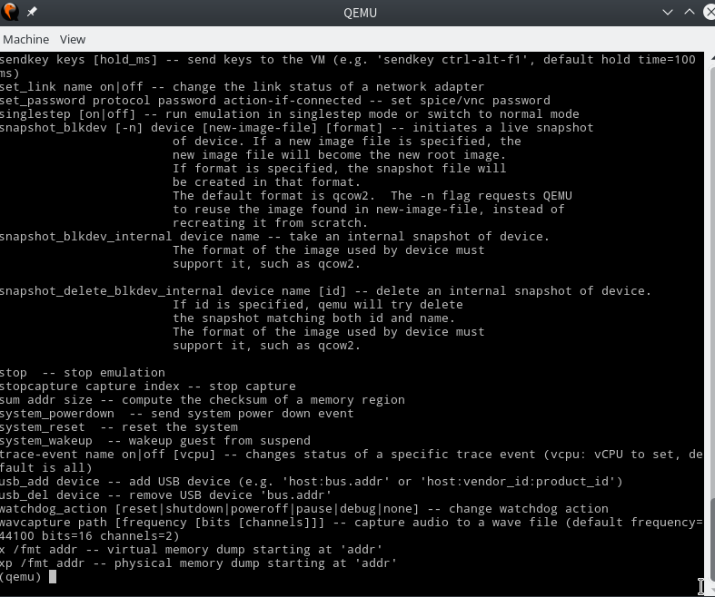
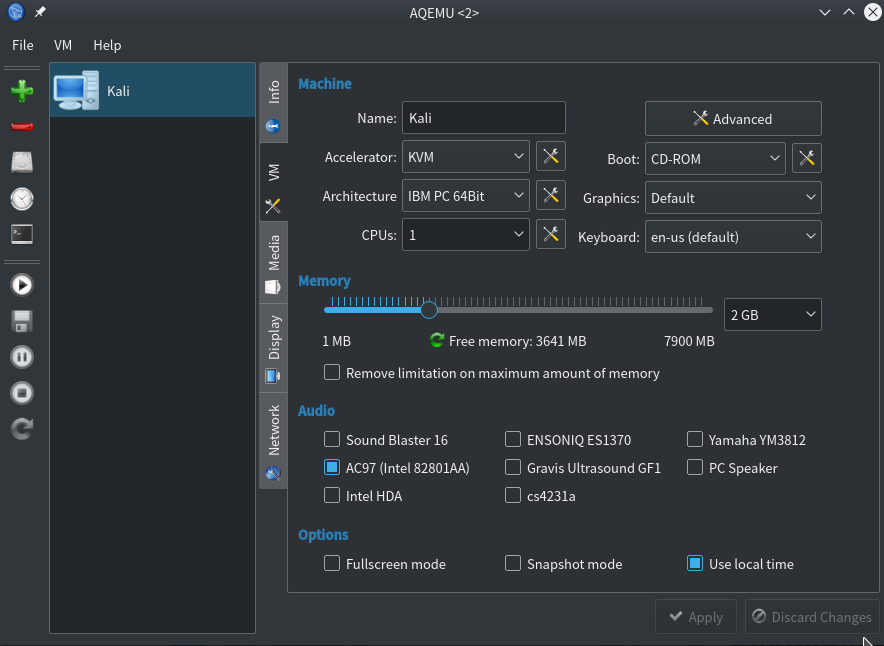

KVM/QEMU初体验
前言
正式使用Linux已经11个月了，从Debian到Arch，Linux已经成了我生活的一部分。
周围人都用QQ和微信，需要传文件和图片，我不得不用，但是又不想使用Windows工作，所以安装了VMWare Workstation来跑虚拟机。
期初在Debian上跑Win10很流畅，换Arch之后总是因为ntfs3g占用率过高而卡顿，后来把宿主机放虚拟机的分区文件系统换成Ext4缓解了一些，把Win10自带的应用删掉后才好了很多。
KVM 是 kernel-based Virtual Machine 的简称,是一个开源的系统虚拟化模块,是 Linux 下 x86 硬件平台上的全功能虚拟化解决方案。
QEMU是一个强大的开源仿真器，仿真系统，仿真各种硬件。

QEMU通过KVM虚拟化达到更好的性能，以前从来没有用过QEMU，于是花了很多时间入门，每个细节都不放过，学习过程中收获了很多，对虚拟机也有了更进一步的了解。
IBM开发者社区真是一大堆干货，还有各大产品的官方文档和Wiki。自带的man pages也非常详细。
也正是开发者们做的伟大贡献，能让我方便地在Linux上进行工作和娱乐。也很惭愧目前自己没有能力做贡献。
安装
为了更方便的学习，先不使用图形化界面。(后来发现不装图形化的我太年轻，正式环境中配置远比想象中要多，而且复杂很多，CPU，键盘，USB，声音等都很难配置)
1 | sudo pacman -S qemu |
还是安装图形化界面吧，试过qtemu,qemu-launcher,aqemu要好用一点。
1 | yaourt aqemu |
添加硬盘
创建硬盘
QEMU支持许多种镜像格式，包括VMDK, VDI, VHD (vpc), VHDX, qcow1 和 QED，可以通过qemu-img进行操作。
目前一般采用raw和qcow2。
raw是原始磁盘镜像格式，速度最快，但是要立即分配磁盘空间。
qcow2速度稍慢，不用立即分配空间，支持很多特性，比如快照，回滚，加密，压缩等等。
比如创建一个raw格式的硬盘镜像
1 | qemu-img create -f raw Kali_Linux.img 20G |
或者创建一个簇大小为2M，立即分配所有空间的qcow2硬盘镜像
1 | qemu-img create -f qcow2 -o cluster_size=2M,preallocation=full Kali_Linux.qcow2 4G |
格式转换
qemu-img支持转换磁盘镜像格式。某些情况下，需要迁移磁盘镜像。
比如我想要对比Kali Linux运行在KVM和VMware下的性能，需要把vmdk转换成更适合QEMU的磁盘镜像格式。
把vmdk转换成raw
1 | qemu-img convert -f vmdk -O raw Kali\ 2016\ 64-bit.vmdk Kali_Linux.img |
把vmdk转换成qcow2
1 | qemu-img convert -f vmdk -O qcow2 Kali\ 2016\ 64-bit.vmdk Kali_Linux.qcow2 |
开启硬件辅助虚拟化
确保在BIOS里开启了VT。我的电脑是Intel平台，把intel_iommu=on加进内核参数。如果是AMD平台则用amd_iommu=on。
IOMMU技术可以说是把硬件设备直接映射到虚拟机上，解决外围设备的支持问题和硬件利用效率问题。
在/boot/grub/grub.cfg文件里修改。
1 | linux /boot/vmlinuz-linux root=UUID=6bb8eda5-d588-4e6a-8f5e-bbc856cc9f96 rw quiet intel_iommu=on |
重启之后查看IOMMU是否开启
1 | gorgias@3vil ~> dmesg | grep -e DMAR -e IOMMU |
安装图形驱动，这里先试试vmware的。安装后可以解决鼠标不显示的问题，但是进入桌面会花屏几秒。
1 | sudo pacman -S xf86-video-vmware xf86-input-vmmouse |
尝试启动虚拟机，参数：使用Kali_Linux.qcow2硬盘镜像，内存2GB，使用vmware图形驱动，仿真Q35芯片组，使用KVM，开启iommu。
1 | qemu-system-x86_64 /home/gorgias/media/Lancer/KVM/Kali\ Linux/Kali_Linux.qcow2 -enable-kvm -m 2048 -vga vmware -machine q35,accel=kvm,type=q35 -device intel-iommu |
用起来挺流畅的

QEMU monitor
QEMU提供一个检查虚拟机运行状态的监视器，
在QEMU界面按Ctrl + Alt + 2(不是小键盘)可以切换到QEMU monitor。如果不能，请检查快捷键是否冲突。
也可以在启动虚拟机的时候，添加-monitor dev参数，比如-monitor stdio将允许使用标准输入作为 monitor 命令源。
在monitor输入info kvm检查kvm模块是否开启。
1 | (qemu) info kvm |

AQEMU
配置是不可能全手动配置的，这辈子不可能全手动配置的。
QEMU是非常强大的工具，值得深入研究，吾等还是随便玩玩就好。

界面有点像Virtual Box，功能齐全。像VMware一样配置就能跑起虚拟机了。
不管是性能还是易用性，VMware都要强很多。